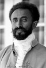

Haile Selasiye (1892–1975) Etiyopya’nın son imparatoruydu. Avrupa sömürgeciliğine karşı direnişin sembolü haline geldi. Dünya çapında saygı duyulan bir devlet adamıydı. Jamaika’daki bir grup taraftarına göre ise o bundan çok daha fazlasıydı: Selasiye yaşayan bir tanrıydı.

Selasiye ve ilham verdiği dini grup Rastafarianların öyküsü dinler tarihinde oldukça istisnai bir örnek teşkil etmektedir. Sadık bir Ortodoks Hıristiyan olan Selasiye kutsal güçleri olduğunu reddediyordu. Yine de Rastafarian hareketi imparatorun yaşamı boyunca büyüdü ve ölümünden yıllar sonra bile varlığını korudu.
Selasiye, Etiyopya’da bir köyde doğdu. 1916 yılında bir darbeyle ülkenin kontrolünü ele geçirdi. 1930 yılında resmen kral oldu. Efsaneye göre kurduğu monarşinin soyu antik çağa, 3 bin yıl öncesine kadar uzanıyor ve İncil’de adı geçen Saba Kraliçesi ve Kral Süleyman’a dayanıyordu. Etiyopya pek çok Afrika ülkesinin aksine hiç sömürge olmamıştı. 225. İmparator Selasiye ülkesinin bu statüsünü korumak için mücadele etti.
Etiyopya’nın bağımsızlığı Selasiye’yi Kuzey Amerika’daki pek çok siyahinin gözünde bir kahraman haline getirdi. Afro-Amerikalılar kendine yeterliliğin bir örneği olarak ondan ilham alıyordu. Hayranlarından biri de Jamaika doğumlu aktivist Marcus Garvey’di (1887–1940). Selasiye’yi kendine güven ve siyah özgürlük hareketinin bir simgesi olarak görüyordu.
1936 yılında Etiyopya Benito Mussolini’nin (1883–1945) faşist İtalyan hükümeti tarafından işgal edildi. Selasiye ülkeden ayrılmaya zorlandı. Ülkesinin haklarını savunmak için verdiği mücadele ile yaygın bir üne kavuştu. “Bugün bize, yarın size,” diyerek Milletler Cemiyeti’ni uyarıyordu. II. Dünya Savaşı sırasında Londra’dan ülkesindeki muhalefeti yönetti. 1941 yılında ülkesi özgürleşince geri döndü.
Çok geçmeden Jamaika’daki Selasiye taraftarları ona tapmaya başladılar. Onu “Siyah Mesih”, Hz. İsa’nın yeniden beden bulmuş hali olarak gördüler. Kendilerine ise Rastafarianlar adını veriyorlardı. Bu isim Selasiye’nin Amharca dilindeki adından geliyordu. Rastafarianlar, Selasiye’yi hayrete düşürüyordu. Ülkeden ne zaman çıksa onu muazzam sevgi gösterileri ile karşıladılar. Ancak Selasiye onların teolojisini kesin olarak reddetti. Rastafarianlar, Etiyopya’da asla taban bulamadılar.
Ek Bilgiler
1- Selasiye “Conquering Lion of the Tribe of Judah” (Yahuda Kabilesinin Fatih Aslanı) unvanını kullandı. Zira ailesi soylarını Kral Süleyman’a dayandırıyordu. Üç sarayındaki maiyetinde eğitimli köpekler, çitalar ve tahtını koruyan aslanlar da vardı.
2- Sürgünden döndükten sonra 1964 yılında Etiyopya’da köleliği kaldırdı.
3- 1974 yılındaki büyük kuraklık sırasında askerler tarafından görevden alındı. Etiyopya monarşisi aynı yıl resmen kaldırıldı.